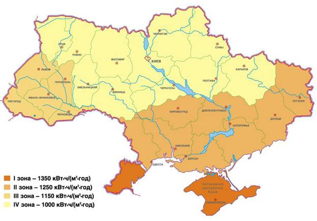
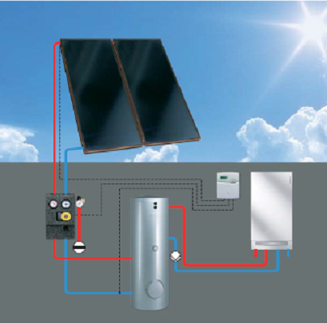
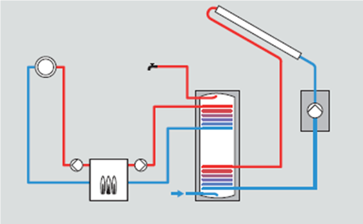

Что такое солнечный коллектор

Солнечный свет – это бесплатный и бесценный подарок, который человечество получает каждый день, порой даже не задумываясь об этом. Никто из нас не представляет, какой была бы жизнь человека без солнечного света. Без солнечного света также не мыслима и даже не возможна жизнь на земле вообще. Свет нужен каждому живому существу.
Солнечный свет – это лучистая энергия солнца, которую солнце постоянно выделяет в результате химических реакций, происходящих в нем. Человек же непосредственно воспринимает солнечную энергию как видимый свет глазами, а также как тепловое инфракрасное излучение, которое ощущается нашей кожей.
С наступлением технического прогресса человечество в процессе своей жизнедеятельности с каждым годом расходует все больше и больше энергетических ресурсов на нужды промышленности, транспорта и жилищного сектора. Но твердые, жидкие и газообразные ископаемые, которые используются для получения тепловой и электрической энергии и обеспечения всех энергетических потребностей человечества, исчерпаемы и, более того, уже в значительной мере исчерпаны, что приводит к значительному и постоянному росту цен на энергоносители. AlterAir. Последствием их использования и переработки является катастрофическое ухудшение экологической ситуации во всем мире, что негативно влияет и на человека.
Поэтому в последние годы люди все больше начинают задумываться о необходимости использования такого надежного источника энергии для покрытия своих энергетических потребностей, которым является Солнце. Тем более, что такое использование возможно.
Не углубляясь в физику и химию процессов, которые происходят в Солнце, а также математику количества энергии, которую излучает Солнце в космическое пространство, все же необходимо отметить, что на поверхности атмосферы Земли средняя интенсивность солнечного излучения по данным Всемирной метеорологической организации (ВМО) и Организации Объединенных Наций (ООН) достигает 1 367 Вт/м2 (это значение называется солнечной постоянной), поверхности же Земли достигает максимум около 1 000 Вт/м2 в связи действием атмосферы и рассеиванием облаками. Падающее на Землю прямое излучение поглощается поверхностью, нагревая ее, частично отражается и также переходит в рассеянное излучение. Суммарным солнечным излучением называют сумму прямого и рассеянного излучения, доли которых составляют по 50 % в среднем за год для Украины с некоторым перевесом в сторону прямого летом и в сторону рассеянного зимой.
Интенсивность солнечного излучения может колебаться в очень больших пределах от 50 Вт/м2 при затянутом облаками небе до 1000 Вт/м2 при безоблачном небе.
Суммарная энергия солнечного излучения обычно измеряется за какой-то более длительный период времени: день, неделя, месяц, год.
Максимальное суммарное солнечное излучение за день в Украине достигает 8 кВт?ч/м2 летом и 3 кВт?ч/м2 в солнечный зимний день.
По данным многолетних наблюдений, среднегодовое суммарное солнечное излучение в Украине изменяется от 1350 кВт?ч/м2?год на юге до 1000 кВт?ч/м2?год на севере и в центральной части, что соответствует аналогичным показателям для стран центральной Европы. АльтерЭйр. В зависимости от среднегодового суммарного солнечного излучения на карте ниже представлена территория Украины, поделенная на четыре зоны.

Поэтому, анализируя приведенные данные, правильным выводом будет решение о целесообразности использования такого количества энергии, которое поступает на каждый квадратный метр земной поверхности из года в год.
Солнечный коллектор – это генератор теплоты, который преобразует солнечное излучение в тепловую энергию с максимальным коэффициентом полезного действия. То есть главным его отличием от традиционных генераторов теплоты (котлов) является то, что он не расходует традиционное топливо (газ, нефть, мазут, древесина, уголь). Источником энергии для него является солнечное излучение. Таким образом использование энергии солнца может снизить потребление и затраты на энергоресурсы в несколько раз.

На Западе солнечные коллекторы давно уже зарекомендовали себя и прочно заняли позиции на рынке как оборудование, позволяющее обеспечить существенную экономию энергетических ресурсов.
Солнечный коллектор входит в состав солнечной системы и является главным элементом для преобразования в тепловую энергию солнечного излучения и ее передачи теплоносителю (вода, гликолевая смесь). Циркуляцию теплоносителя в контуре обеспечивает насос, который входит в состав гидрогруппы. Альтер Эйр. Также в состав солнечной системы входит емкостный водонагреватель (бак) с встроенным или внешним теплообменником, в котором теплота из контура коллектора подогревает воду из холодного водопровода до температуры горячей воды. Автоматика регулирует и контролирует всю работу солнечной системы.Солнечные коллекторы используются для нагревания воды и обеспечения нужд горячего водоснабжения и поддержки отопления в жилых зданиях, офисах, сфере обслуживания, торговых центрах, медицинских учреждениях, где есть возможность для размещения панели солнечного коллектора.
Необходимо подчеркнуть, что использование солнечных коллекторов не может полностью восполнить необходимость здания в тепловой энергии. С помощью солнечного коллектора можно покрыть до 60 – 70 % годового расхода тепловой энергии на горячее водоснабжение и до 30 – 40 % на отопление современных зданий. Поэтому использование традиционного источника теплоты остается обязательным, но достигается весьма значительная экономия в процессе эксплуатации. Alter Air. Традиционный источник используется тогда и только в той мере, когда солнечной энергии не хватает для обеспечения необходимых параметров, восполняя недостающую часть энергии.

Правильный подбор всех компонентов солнечной системы позволяет с максимальной эффективностью использовать большую часть солнечной энергии, которая падает на коллектор на протяжении всего года, а также использовать теплоту, полученную из солнечного излучения, даже в те дни, когда небо полностью затянуто грозовыми тучами, расходуя энергию, накопленную в солнечный день в баке-аккумуляторе.
Гелиосистемы на базе солнечных коллекторов – это установки, которые все чаще уже сегодня можно увидеть на крышах и фасадах домов в Украине.
Климат Украины позволяет использовать гелиосистемы в зависимости от выбранного оборудования не менее 8 месяцев в году, а в некоторых случаях и круглый год (для поддержки системы отопления).